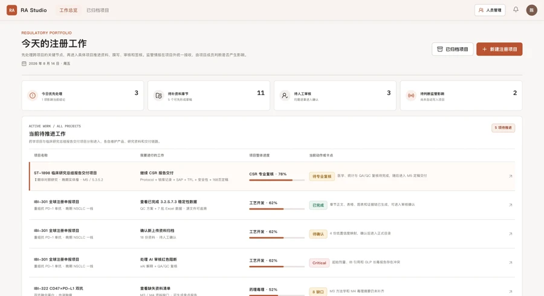
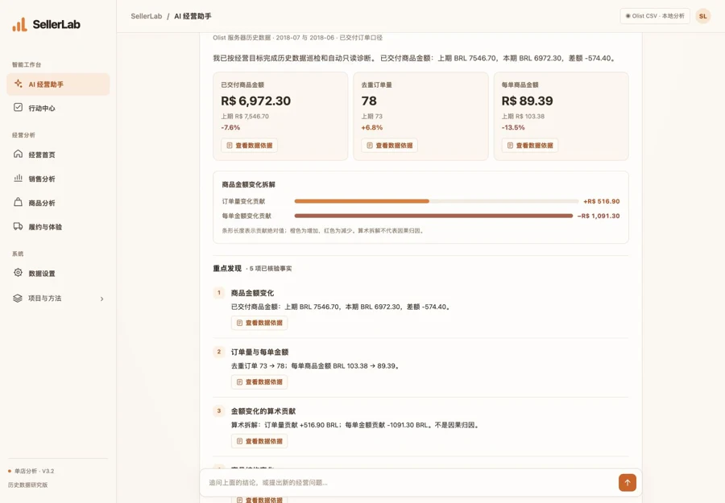
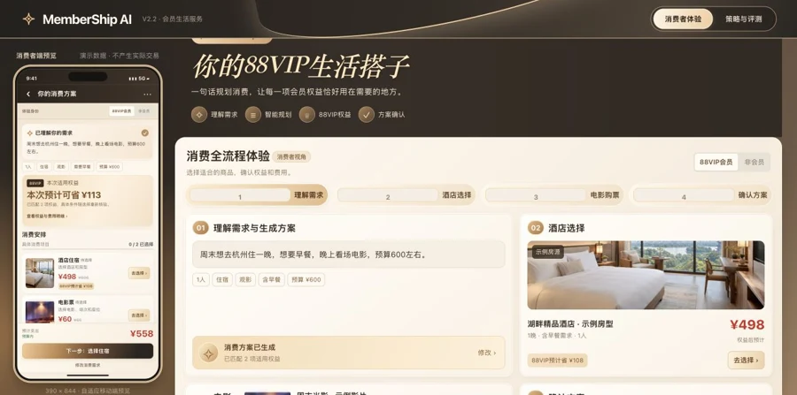

理解业务
从访谈、工作现场和数据里，找出谁遇到什么问题，以及解决它的价值。
我关注 AI 与互联网产品，实践横跨企业级 AI、Agent 与电商。喜欢理解业务、琢磨交互，也用数据和实验检验产品价值。

原有产品原型企业级 AI 注册申报工作台
从资料、章节生产到证据审阅，参与产品 0 到 1、客户 POC 与 85 万元项目中标。
阅读完整案例
在线 Demo 实际截图AI 商品经营诊断 Agent
从订单增加、商品金额下降的真实数据问题出发，让计算、推理和证据核验各司其职。
阅读完整案例
独立 Demo · 模拟业务会员权益智能匹配与增长策略
把用户消费意图转化为可理解的权益和费用方案，同时设计运营策略与增长实验。
阅读完整案例保留早期产品构想与研究记录，处于可行性研究阶段。
从访谈、工作现场和数据里，找出谁遇到什么问题，以及解决它的价值。
把任务拆成流程，决定哪些交给规则、哪些需要 AI、哪些必须由人判断。
用原型和可运行 Demo 检查交互，让用户能理解结果、追问依据、完成任务。
建立基线和评测任务，从失败案例中改进方案，区分已验证结果与下一步假设。
华东师范大学教育学硕士在读。2026 年 3—11 月在蜂旭科技担任 AI 产品经理，参与企业级 AI 从产品定义、原型设计到客户验证与商业化。
研究训练让我习惯提出假设、设计对照、解释数据；产品实践让我在意具体业务和使用体验。我自学 Python、SQL、Figma 与 AI 开发工具，持续探索电商经营、会员增长和 Agent 产品。
查看最新版简历